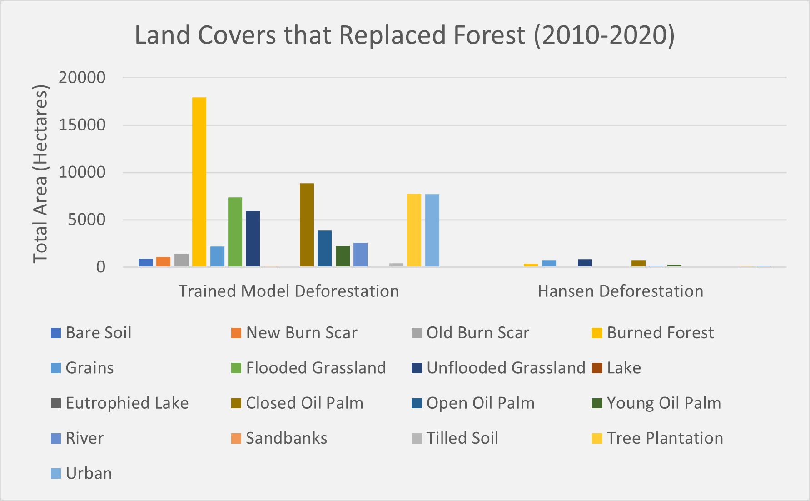

Mapping Drivers of Ecosystem Change in Colombia

Project Introduction
Although activities such as cattle ranching have traditionally been the most significant drivers of landscape change in Colombia, the global biofuel boom and its many national and regional socioeconomic benefits have catalyzed additional landscape change through the expansion of oil palm since the 1970s. The cultivation of oil palm remains an appealing industry for Colombia due to its ability to create jobs and to generate economic growth both nationally and regionally, which therefore could potentially be reinvested into communities in place of what may be weak existing institutions, especially in rural areas.
Because of these benefits, the Colombian government continues to support the oil palm industry through government subsidies, tax exemptions, research funding, and a biofuel program established in 2001. However, researchers note that this support often gives preference to large shareholders rather than owners of smaller farms, therefore contributing to the creation of an elite class whose concentrated power reduces participation in policy-making decisions among non-elites and exacerbates the impacts of poverty. Additionally, an increase in violence and illegal land-grabbing has been attributed to oil palm expansion in certain regions. The negative socioeconomic implications of oil palm expansion in Colombia are relatively well-known, but existing research analyzing the environmental implications, especially regarding deforestation and biodiversity loss, is more contentious.
Colombia is recognized globally as a sustainable producer of oil palm, as the majority of Colombian oil palm expansion allegedly occurs on already degraded land (such as former pastures) rather than contributing to deforestation or other natural landscape conversion. Government reports and numerous research studies support this sustainable production claim; however, not all existing studies agree, and many attempts to quantify the natural landscape conversion that may have occurred as a result of oil palm expansion present contradicting results. To gain a more accurate understanding of the role Colombian oil palm expansion plays in deforestation and other land cover changes, additional research exploring the changes in landscapes over time is necessary.
Research Goals
Our research adopts a spatial and temporal approach which employs remote sensing methods and GIS analysis to map agricultural land covers and their contributions to deforestation over a period of ten years (2010-2020). The study area is the Magdalena River Valley in northern Colombia, which has been identified as having the second largest amount of land suitable for oil palm conversion in the country. This analysis includes the production and comparison of two supervised land cover classifications in order to quantify and characterize land use change and deforestation in the study region. The outputs of this analysis will be combined with and compared to existing global spatial data on forest cover change to assess the suitability of global forest change products in characterizing forest lost in this region.
The overarching goals of this study are to:
1) quantify deforestation between 2010-2020;
2) determine the extent to which oil palm contributes to the deforestation of natural forest in the study region;
3) assess remote sensing analysis’ potential contributions to informing environmental conservation and planning efforts;
and 4) determine the suitability of global forest change products in characterizing forest loss.
2010 & 2020 Supervised Land Cover Classifications

The 2020 land cover classification uses three separate datasets: 1) 3 Landsat 8 images covering the study area, all of which were acquired on March 6th, 2020; 2) a digital elevation model (DEM); and 3) a radar image from the ALOS-PALSAR satellite, which was acquired in 2018. The Landsat 8 images as well as the DEM were obtained from the United States Geological Survey (USGS)’s EarthExplorer platform.
Because our study focuses primarily on the lowlands of the study area where much of the regional agricultural expansion is occurring, areas of high elevation or dissimilar biotic components were excluded from the initial study area. Using the Landsat 8 images as well as Google Earth imagery as references, spatial training polygons were drawn in QGIS to represent patches of different land cover classes; these polygons (772 total) were divided into 18 different classes, which all correspond to different land cover types found in the study area. These classes include bare soil; new and old burn scars; burned forest, dense (natural) forest; grains; flooded and unflooded grasslands; lakes; three stages of oil palm maturity; tilled soil; sandbanks; river; planted tree plantations; and urban areas.
The seamless mosaic generator (SMG) function, which was developed in R by Dr. Gutierrez-Velez, was used to preprocess the Landsat 8 images. Preprocessing included the mosaicking of the three images to create one larger image; topographic correction using the DEM to remove the mosaicked image’s shadows due to varying topography; and cloud masking to fill any cloud gaps in the image. Landsat 8 images obtained on February 19th, 2020 were used to fill the cloud gaps in order to keep the seasonality of both sets of images consistent. The normalized difference vegetation index (NDVI) was calculated using the Landsat 8 image’s visible and near-infrared wavelengths to measure vegetation density, and speckle filtering was applied to the HH and HV bands of the 2018 ALOS-PALSAR image to reduce noise and inaccuracies associated with SAR images’ granularity (European Space Agency). The NDVI, both PALSAR bands, and the DEM were stacked to the mosaicked and pre-processed Landsat 8 image to form a total of 11 bands. Before the classification, the coastal aerosol and blue bands (bands 1 and 2) of the raster stack were dropped to reduce noise contamination in the classification and to match the 2010 Landsat 5 images’ bands.
A supervised classification (Random Forest method) was run with the raster stack and trained polygons as inputs. The outputs include a thematic map of the study area’s 18 land cover classes and a trained model to classify the 2010 classification.

The 2010 land cover classification uses three separate datasets: 1) 3 Landsat 5 images covering the study area, all acquired on January 22nd, 2010; 2) the same DEM as was used in the 2020 classification; and 3) a radar image from the ALOS-PALSAR satellite, which was acquired in 2010.
The SMG function was used again for image processing, which included mosaicking; topographic correction; and radiometric normalization to ensure the 2010 band values closely match those of the 2020 images for accurate comparisons between the two. Due to a limited availability of Landsat images acquired during the desired season in 2010, the Landsat 5 mosaic has an exceptionally high percentage of cloud cover and few options for cloud masking. Therefore, large gaps were left in the southern portion of the study area and were not able to be classified.
Using the Landsat 5 bands, NDVI was calculated. Speckle filtering was then applied to the HH and HV bands for the 2010 PALSAR radar image, which were then stacked with the NDVI and DEM onto the preprocessed Landsat 5 mosaic. The blue band (band 1) of the raster stack was dropped to avoid noise contamination and to match the 2020 Landsat images’ bands.
Because the 2010 land cover classification is based on this model, no training polygons were collected for 2010. Using the 2010 stacked raster and the 2020 trained model, a supervised classification was run to create a second thematic map depicting the same 18 classes as the 2020 map.
The least accurate class for both the user and the producer is young oil palm, which has an 11% user accuracy and a 9% producer accuracy. These scores indicate that for the young oil palm class, only 9% of the reference sites were identified correctly (meaning that there were numerous omission errors), and 11% of the young oil palm identified in the classification is indeed young oil palm (meaning that there were numerous commission errors as well). Young oil palm, which refers to oil palm plantations that consist of immature, recently-planted trees with sparse/small canopies, may be difficult to classify due to its visual similarities to unflooded grassland. The user and producer accuracy for dense natural forest is 79% and 92%, respectively, which indicates that the trained 2020 classification’s prediction of the presence of dense natural is fairly accurate and could be used as the benchmark to assess the accuracy of forest products such as that of Hansen. The user and producer accuracies for mature oil palm are 55% and 84%, respectively, which indicates that the presence of mature oil palm may have been overestimated by the prediction. Overall, the map represents a complex landscape characterized by a relatively diverse array of agricultural activities.
A visual comparison indicates general agreement between the 2010 and 2020 classifications, though some land cover classes (such as tilled soil and urban) appear to be overclassified in the 2010 classification. The cloud gaps in the 2010 classification pose a significant issue when attempting to compare the results of the classifications, especially because the majority of the cloud gaps are located in the areas of special interest for oil palm cultivation and expansion (such as the far southeastern portion of the study area). For a more meaningful comparison, cloud gaps can next be filled to ensure that all regions within the study area are classified. Additionally, the polygons used to train the 2020 classification model could be double-checked to ensure that outlier pixels or mistakenly labeled polygons are not contaminating the classification. The improvement of the 2020 overall accuracy (which is currently 74%) can in turn improve the 2010 accuracy for a more accurate classification comparison.
Land Cover Change Analysis

To identify dominant land cover change patterns between 2010 and 2020, a change analysis focusing specifically on deforestation and oil palm expansion was conducted. To ensure that the same number of pixels within both classification maps were being compared, the 2010 cloud gaps were first erased from the 2020 classification map.
To analyze and quantify the deforestation that occurred between 2010 and 2020, a mask isolating the 2010 dense forest class was created and then multiplied by the 2020 classification; this determined which 2020 land cover classes replaced the 2010 dense natural forest within the study area. To analyze and quantify oil palm expansion between 2010 and 2020, a mask isolating the 2020 mature oil palm classes was created then multiplied by the 2010 classification; this determined which 2010 land cover classes were converted into mature oil palm in 2020. From this analysis, the total areas of natural forest loss and reforestation of oil palm between 2010 and 2020 were calculated.
The three land covers that contributed most to deforestation for the trained classification analysis are burned forest (17,913 hectares replaced forest), mature oil palm (8,869 hectares replaced forest), and tree plantation (7,742 hectares replaced forest). In comparison, the three land covers that contributed most to deforestation for the Hansen analysis are unflooded grassland (854.5 hectares replaced forest), grains (732.3 hectares replaced forest), and mature oil palm (726.4 hectares replaced forest). 876 hectares of dense natural forest were identified by the Hansen deforestation analysis as contributing to deforestation, which indicates that there is poor agreement between what the Hansen product classifies as forest and what the trained model classifies as forest.
This project is ongoing. Please check back again for a more complete summary of the project.
get in touch
Thank you for stopping by! If you'd like to get in touch, please feel free to email me at the address below or send me a message on my LinkedIn.
Email Me
michelle.evelyn2@gmail.com